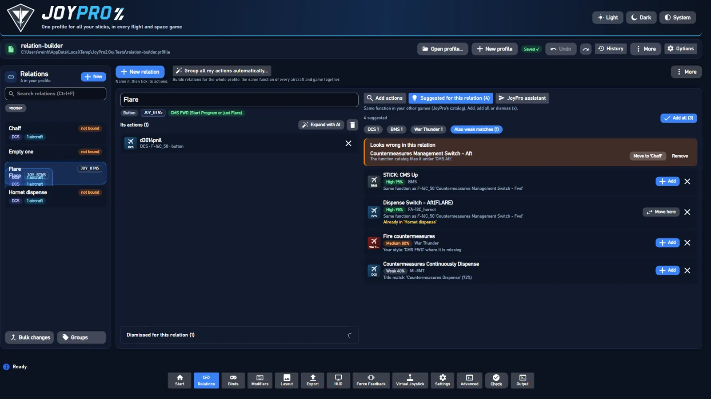
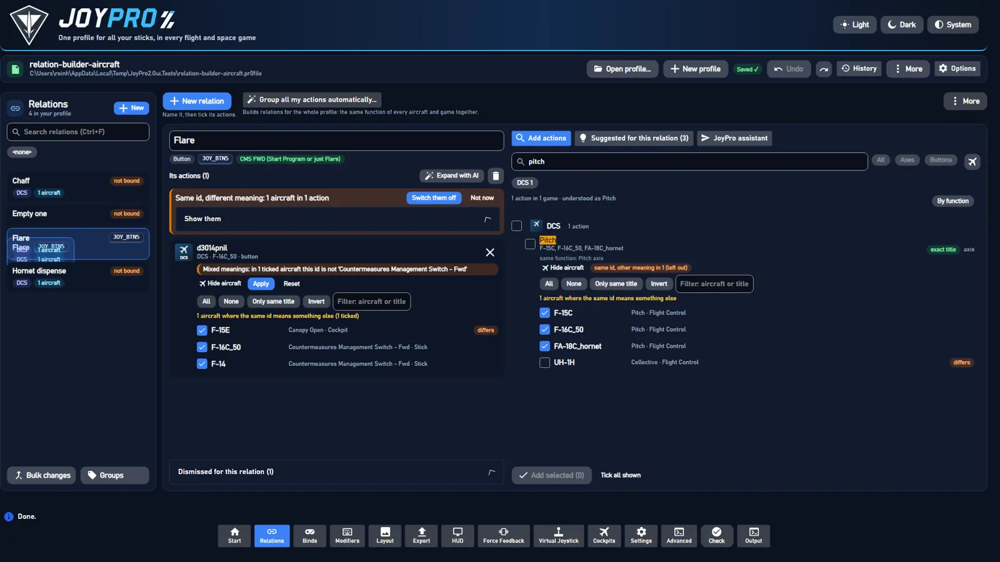
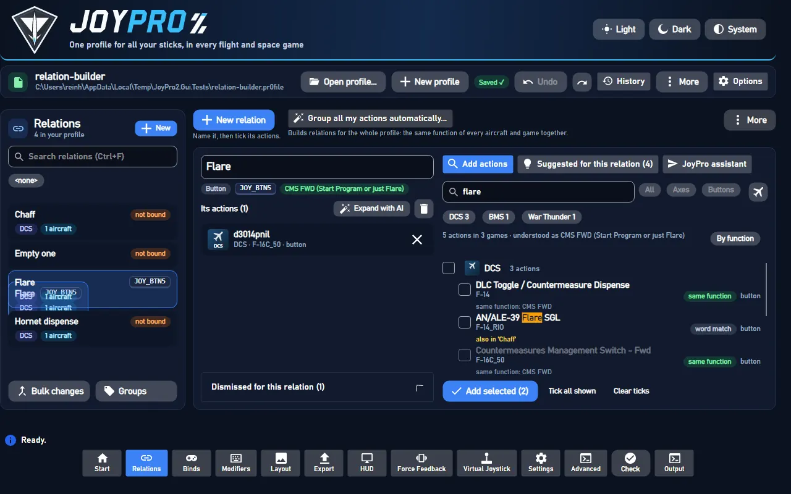
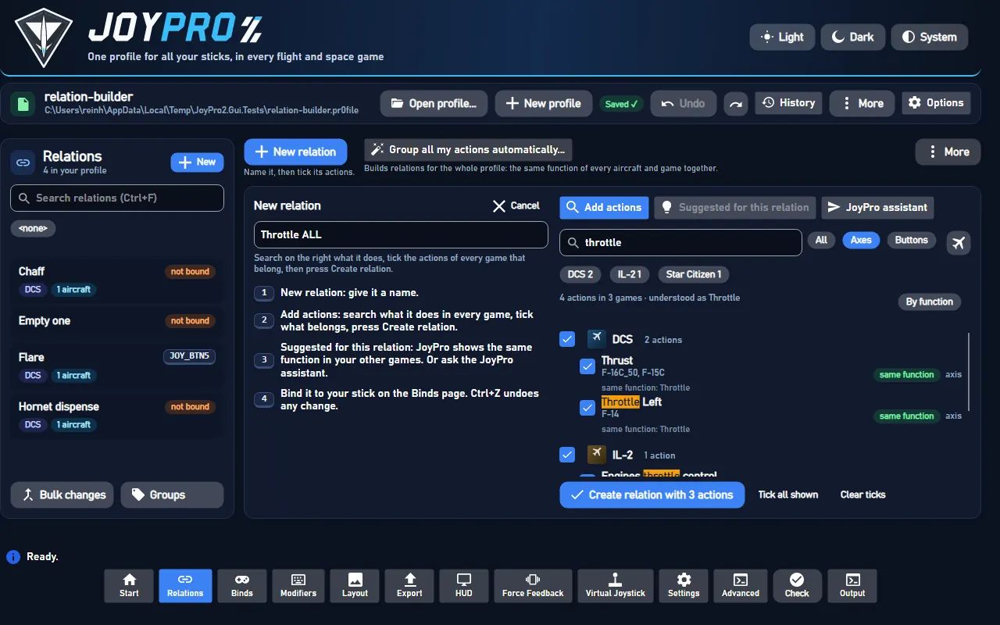
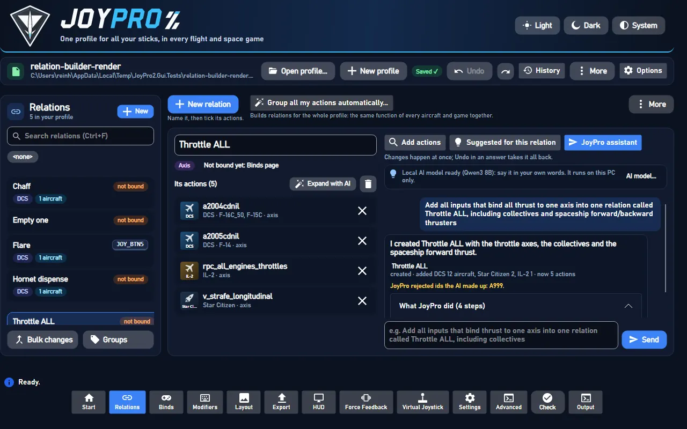
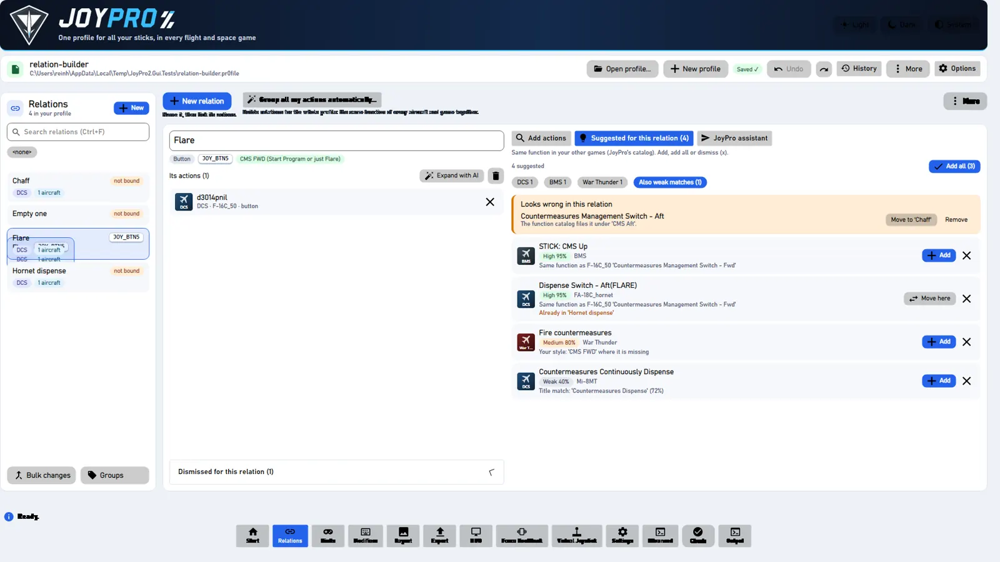

From docs/relation-builder.md in the repository (generated, always the current text).
A relation is one function, for example "Throttle ALL". It holds that function's action in every game and aircraft (DCS F-16C "Thrust", IL-2 "Engines throttle control", Star Citizen "Strafe forward / backward" ...), all on one input of the stick. The Relations page builds it the way JoyPro 1 did: name it, search what it does over every game, tick what belongs, add. On top of that JoyPro suggests what else means the same, and the JoyPro assistant does it from a sentence. Binding the relation to a button or axis happens on the Binds page.

#The page
- Left: the relations (search, the filter bar, Ctrl/Shift for several,
Bulk changes,Groups). Each card shows its bind as device, input and modifiers:WarBRD · BTN 8 · Shift A(the tooltip has the full device name);not boundwhen it has none. - Top right:
New relation("Name it, then tick its actions.") andAuto-build relations from all my actions...("Builds relations for the whole profile: the same function of every aircraft and game together"),More(refresh, import/export, next relation with suggestions, save). - The open relation: its name in a text box (edit in place: Enter or leaving the box renames, Esc cancels;
engine relations rename), its kind (Axis / Button), its input (orNot bound yet: Binds page), the function chip (see The function chip),Suggest missing (n),Expand with AI,Duplicate(a menu:Duplicate,Duplicate without bind=relations mass duplicate --no-bind), delete; the row wraps in a narrow window. Below, Its actions: one row per game action with the game badge, the aircraft, the title and the kind,xremoves it after "Remove this action?" (withDo not ask again; Settings > Confirmations asks again). A click on a DCS action opens its aircraft (below). - Order of the actions: drag a card by its grip (a line shows where it lands), or Alt+Up / Alt+Down, or the card's
context menu (Move up / down / to the top / to the bottom). The engine keeps the order in the profile
(
relations item move <relation> --node game:id --to <position>|--up|--down), one undo step per move. - Relation card context menu (right-click in the list):
Duplicate,Duplicate without bind,Delete. - Many actions at once:
Add selectedandAdd allsend one engine call; singleAdd/Dismissclicks in a row are sent together (one call per batch, one reload at the end). Outdated background reads (suggestions, search, aircraft of a relation that changed again) are dropped instead of queued. - No relation open: "Pick a relation or make one" and the four steps; they show only then (never over a relation's actions). A refresh of the relation list (after an edit, an undo, a save) keeps the open relation open; when it leaves the list (deleted, filtered out) its actions leave the editor with it.
- Right, four panels:
Add actions(withOpen catalognext to the search),Suggested for this relation (n),Catalog,JoyPro assistant;More>Suggest missing for every relation...shows the review list there.
#The function chip
What the relation stands for in every aircraft and game, from the function catalog (engine/EngineRelationPurpose.cs,
one rule for the chip, Suggest missing, AI fill and Auto Assign). A majority is not enough: many users keep relations
per physical button position, like the real cockpit ("Throttle - Boat - Aft": Magic in the M-2000C, the RWR
lights in the Viggen, flaps in the F-5E, the drag chute in the F-4E), and one function over all of that is wrong.
| Chip | When (relations suggest FunctionState) |
|---|---|
Function: <name> (green) |
set (picked by the user), named (the relation is named after the function, Auto Group does so) or covered: at least 80 % of the switched-on actions the catalog knows are that function (a catalog substitute for it counts), and at least two of them (or its only action) |
Different functions per aircraft |
mixed: the catalog knows its actions as different functions and none reaches 80 %. Tooltip: "This relation is a button position: each aircraft uses it for its own function" |
Function: none |
cleared: the user picked "None" |
Set function |
unknown: the catalog knows too little of it |
A click opens a small picker: a catalog function of the relation's kind (with a search box), None: each aircraft uses it for its own function, and Automatic (only after a choice). Saved in the profile (Relation.Function: slot id,
none, or empty = automatic; Ctrl+Z undoes it). CLI: relations function <relation> [--set <function>|--none|--auto],
relations function --list [--axis|--button] [--query text].
A mixed or cleared relation gets no function-based suggestion: no catalog, style, function map or title
suggestions (only the same DCS id in aircraft where it means the same, i.e. its variants); AI fill leaves it out
(ButtonPositions in its result, "left to you"); Auto Assign places it without a function slot (the user's own layout
first). The function map's meanings follow the same 80 % rule. Auto Group's learned style respects the user's choice
(a set function claims the relation, none teaches nothing).
#Binds page: what the relation does
Under the selected row's header the Binds page shows a read-only peek at its relation (MainWindowViewModel.BindPeek.cs,
relations show): What it does: n actions in m games, the actions grouped by game, each with its title, its
aircraft count (a click shows the names) and axis / button, and Open in Relations (the relation editor with this
relation). Hide / Show folds it; the state is remembered (list-preferences.json BindPeekOpen), folded it
reads nothing.
#Filters (Relations and Binds pages)
Both pages have the same filter bar (ListFilterViewModel, Views/Controls/ListFilterBar.axaml), each with its own
ticks, remembered in <settings>\list-preferences.json (the typed search is not remembered):
- Search (Ctrl+F): every word somewhere in what the box next to it says (remembered per page with the ticks):
Name + actions(default: the relation's name and the titles of its actions, fromengine relations list --titles),Name, orEverything(also games, aircraft, groups, device, input and modifiers). Devices, games and aircraft are otherwise picked with their filters, so "throttle" does not list every relation bound on a device called "... Throttle". The best fits come first: the relation called as the search, then names starting with it, then names with every word, then relations found by their actions (each part in the page's sort). The Binds page works the same. - Groups: tick groups (several: any of them),
No groupfor relations without one. - Games: tick a game for every relation with a switched-on action of it; open it (
>) to tick only some of its aircraft (All/Noneact on the aircraft shown, so typingA-10andAllticks every A-10 version). DCS ticked,None, then A-10A, A-10C and A-10C II: only relations with an action for those aircraft. Games with one list (IL-2, Star Citizen ...) have no aircraft. - Devices: the devices of the binds (two of the same model keep a part of their id).
- Bound / Not bound and Axes / Buttons: switches (a second click switches back to all).
- Sort (the button right of the filters,
ListSortViewModel,Views/Controls/ListSortBar.axaml): sort levels in order, each a key and a direction (A to Z/Z to A), with up / down / remove,Add levelandName only. Keys: name, device (as shown, alias-aware), input (natural: axes X, Y, Z, RX, RY, RZ, sliders, thenBTN 2beforeBTN 10, then hats, then keys), axis / button, games, aircraft count, group, bound / not bound, modifiers (relations have no change date, so there is no "last changed"). Unbound rows go after the bound ones; equal rows go by name. No level = by name (the old order). Each list remembers its levels (list-preferences.jsonSorts); it works on top of the filters and the search, Follow input and the selection stay.
The filters combine (all must fit). Every tick shows how many relations it would show with the other filters as they
are; ticks that would show nothing are dimmed. Under the bar the active filters are chips with x, n of 524 shown and
Clear all. Opening a relation the filters hide (a new relation, "Open" in a review, Next relation with suggestions)
clears them. The relations are filter subjects built once per list, so a filter change is set lookups: on the user's
profile with 524 relations and 3 300 actions a change takes a few milliseconds (the journey test checks < 300 ms).
On the Relations page the whole block (filters, bound / axes switches, chips, sort and the search scope box) folds up
under Filters (2.6.0; at 1280x800 it took a third of the narrow pane's height). Folded, the line under the header
says what is on: the active filters, the search scope when it is not "Name + actions", the sort when it is not by name,
and n of 524 shown (No filters · 524 in all when nothing is on). Open / folded is remembered
(list-preferences.json RelationFiltersOpen, open by default; MainWindowViewModel.RelationFilterPanel.cs).
#Browse the catalog
Open catalog (next to the search) or the Catalog tab: not what a search finds, but everything a game or an aircraft
has (engine relations browse). Pick the game (the profile's games first) and, for DCS, the aircraft (the profile's
first; the open relation's own aircraft is picked when it opens). The actions come in the game's own categories (DCS
HOTAS, Landing gear panel ...; an action in "Control Stick; HOTAS" is in both); games without categories of their
own are grouped by JoyPro's function categories ("Engine and power", "Weapons"). A category opens with a click, shows
how many of its actions your relations use, and ticks all of its rows with its box. Each action shows in this relation, in '<relation>' and, when that relation is bound, bound: WarBRD · BTN 8. Only free hides what is used,
the filter box opens the categories with a match. Ticked actions go in with Add selected (n) (or Create relation with n actions); a DCS action takes its ticked aircraft (the browsed one; its aircraft selector adds more with the same
meaning). The open relation's kind decides what is listed (an axis relation: only axes). The list builds only the rows in view, so a filter or
Open all on a big aircraft (the F-4E has 1635 actions) stays instant.
Sort (the catalog and the search results have the same sort bar as the Relations and Binds lists,
ListSortViewModel.ForActions, remembered as catalog / action-search): game, aircraft, category, title, axis /
button, last updated (the date of the game's command list; DCS: of the aircraft's DB file). No level = their own order
(the catalog by the game's categories, the search best matches first). A first level Category orders the catalog's
categories, a first level Game the search's games; the other levels order the rows inside. The search still shows
each game's best matches (Show n more loads the rest); the levels order what is shown.
Titles are never raw ids or lua keys. Every title shown (relation cards, bind peek, catalog, search, layout titles
and cheat sheets, sync changes, describe-group proposals) goes through one resolver (engine/DcsCommandNames.cs,
shared by the engine and the GUI): the DB title; a DCS localization key in it ("Input.SpitfireLFMkIX.pitch_minus",
"29Fulcrum:Inp:...") takes DCS's English text (<DCS>\l10n\en\LC_MESSAGES\input.mo); else the title the profile stored
for the node (relations show lists it as stored-title lines); else the same command in a sibling DB file (_easy,
CW); else a readable form of the key ("Flaps 1"). A command no list and no profile names says "Command not in this
aircraft's current list". See DCS "Command names". A key or id still finds the command (search,
catalog filter): pitch_minus, flaps_1, Input.SpitfireLFMkIX.pitch_minus, 29Fulcrum:Inp:... or a DCS command id
such as dnilp3007unilcd2vdnilvp-1vunil list it by its readable title (DcsCommandNames.KeyMatches: the stored key, or
the keys DCS's English catalog has for the title).
Readable names outside DCS (engine/EngineReadableNames.cs). The game lists keep the game's ids (the integrations
use them); catalog, search, suggestions and the relation editor show:
- categories: a table per game where the game has group names of its own (MSFS contexts
AIRCRAFT-> "Aircraft",BASIC_CONTROL_HELICOPTER-> "Basic controls: helicopter"; Eliteship_flight-> "Ship: flight"; Star Citizen action mapsspaceship_movement-> "Flight: movement"; X-PlaneFMS2-> "FMS 2"; VTOL VRNumPad-> "Number pad"), else an id-like category as words (flight_controls-> "Flight controls", BMS2.06 AUX COMM PANEL-> "2.06 Aux Comm Panel"); a readable one ("Helicopter and plane") stays as the game writes it; - titles: Star Citizen's own names from its
global.ini(engine starcitizen labelsbuildsDB\StarCitizen\labels.tsvfrom Data.p4k, read only, also afterdb refresh-starcitizen; without itv_strafe_up-> "Strafe up"); two controls with the same game name are told apart by their id ("Pitch" / "Pitch (mouse)"); MSFS 2020 lists with raw event names take MSFS 2024's menu name of the event, else the name made from the event; underscores, run-together words ("HeliBrakes" -> "Heli Brakes") and titles in capitals ("TOGGLE PUSHBACK") as words; abbreviations stay in capitals; - JoyPro's own action texts (
engine/ActionTexts.cs, shared with the GUI):DB\Functions\ActionTexts\<GameId>.tsv(id<TAB>name<TAB>menu section<TAB>explanation, written for JoyPro, shipped). The name stands in for a title that is no words: empty, the id, the id in words ("Rb pitch") or a string-table key (IL-2inprb_pitch-> "Mouse turret aim: up/down"); for IL-2 Korea it always wins (its own text is not readable). The menu section is the category (IL-2 GB / Korea: the Key Mapping tabs). The explanation is the "what it does" line (sourcejoypro, after the cockpit guide and the sim's own description, before the general text of the function). Tables: IL2Game, IL2Korea (every action), IL2CoD, IL2CoDBlitz, FalconBMS (the titles no game text explains). Correction tables (MSFS2024, StarCitizen, XPlane11, XPlane12;ActionTexts.CorrectionGames) only hold titles whose shorthand JoyPro writes out ("EFB Back" -> "Electronic Flight Bag (EFB): Back", "Weapon preset qid" -> the game's QIDs, "Rotate X Axis" -> "Photo Mode Camera: Pan Left/Right Axis"): their name always wins, the category stays the game's. Meanings come from the game's own descriptions; MSFS names a few events opposite to their id (UI_DISPLAY_CFD_OFF = "CFD ON", ADF whole/fract, ENGINE_BYPASS): its menu name and description agree there, so JoyPro follows the menu. The function map cache and the DB refresh of IL-2 GB follow them; - shorthand of the games' own titles written out (not DCS: its titles are the module's): "Step Dn" -> "Step Down",
"Rotor Gov" -> "Rotor Governor", "Fms" -> "FMS" (
ActionTexts.ExpandAbbreviations); engine relations action-info --coverage [--all-examples]counts per game the titles with an unexplained abbreviation (a 2-4 letter piece of the id or a word without vowels that is no known word or cockpit label:ActionTexts.UnexplainedAbbreviation) and titles that are only a word and an axis letter ("Cursor X"); quality gate I2/I4 fail on them outside DCS.
Every button has a tooltip. No list on the page scrolls sideways: long titles end in "...", aircraft lists show the
first ones and +n, chips wrap. Tested at 1280x800 and 1920x1080 (RelationBuilderRenderTests).
#Make a relation, step by step
New relation(Ctrl+N), type its name (Throttle ALL). Left empty, it is named after its first action.Add actions: type what it does (throttle). An opened relation starts with an empty box (2.6.2; before, the box held the relation's name, which testers found "usually irrelevant"); the empty box says where to start and offersSuggested for this relation(which suggests by the relation itself) andOpen catalog. The box is only filled by Find similar and Replace of a Check card and by Back (the search as it was). The search runs while you type (300 ms after the last key) over every game and aircraft (engine relations search "<words>" [--axis|--button] [--plane ...] --limit 400). The engine knows synonyms:throttlealso finds thrust and the helicopter collective,flarethe countermeasure dispense switches.- The rows come grouped by game (
DCS · 48 actions), each with a tick box, the title (the words you typed marked), the aircraft, the kind, why it was found ("same function: Throttle") and one tag when other relations have it switched on (for at least one of its aircraft; the engine'sInRelationswithout the open relation; the same tag on the suggestions, from theirInOtherRelations): none,in '<relation>'(a click opens it) orin 3 relations(a click lists them under the row, a name opens that relation). The search stays; Back to '' above the opened relation's name (and the header's Back, Alt+Left) returns to the relation and its search as they were (builder-searchin the navigation entry). Actions already in the open relation are not shown at their rank: greyed, without a tick box, in a group Already in this relation at the bottom of every list (by game, by function, with game chips, after Show more, with or without the aircraft filter); Tick all shown and Add selected leave them out, and the header counts only what can be added (10 actions in 1 game + 1 already in this relation). The list has three sections (2.6.2, see Same function and Related): Name has every word (n) (titles with every typed word, the engine'sLiteral), Same function (n) (actions of the function the words were read as, by its name, a synonym or a description) and Related (n) (looser links, folded until a click opens it; open by itself when nothing is above it). A section stays above the next in every sort (own order,Sort: Gameand the other levels order the rows within a section), by game and by function, with game chips and after Show more (a game in several sections has itsShow n moreon its last header in view). Before 2.6.1 aGamesort level sorted a game's rows by title, which put "Exterior Lights Master ..." aboveMASTER RESETformaster reset; 2.6.1 had two sections, the second, Same meaning, held everything that was no name match, and the testers' "brakes" showed only landing gear and hook switches there. Only the rows in view are built (a virtualizing list): a search over every game lists up to 160 rows. Each game's main control of the function comes first, markedmain control; a title that does not name the function says it:AXIS ELEVATOR SET — Pitch axis (elevator). - Filters:
All/Axes/Buttons(a relation holds one kind; an open relation with actions shows only its own, an empty one every kind), the game chips of the result with how many actions each game has (none ticked = every game, the best 12 rows of each:--limit 200 --per-game 12; a ticked chip searches that game again for all its rows; the first eight as chips,+n more gamesfor the rest), and the aircraft picker.By functiongroups the rows by the function they are (the engine'sFunctionGroups) instead of by game. Each row shows how it was found (main control,exact title,same function,synonym,by description,name match,related; the chip's tooltip says why in a sentence), and a typo offersDid you mean: throttle?. Same meaning next to All / Axes / Buttons (on by default, remembered inui-settings.jsonaddActionsSameMeaning, the same switch in Settings > Relations): off lists only the name matches, the status line says how many it hides, and a search without a name match says so plainly with Show same meaning to switch it on in one click. The search needs no open profile (the profile only marks which relations use a row). Under a game,Show n moreloads the rest of that game's hits for the same search (--game <game> --limit 400),Show lessfolds them;Expand all/Collapse allabove the list do every game. The state stays while the query, kind and aircraft stay the same; ticks survive expanding and collapsing. - Tick what belongs: a row, or the box of a game for all or none of its rows;
Tick all shown,Clear ticks. A DCS row adds only its ticked aircraft (Same id, different meaning). Create relation with n actions(engine relations add <name> --axis --node game:id:planes ...). Axes and buttons together are refused with a hint. The new relation opens.
For an open relation the same panel says Add selected (n) (engine relations suggest apply <relation> --add game:id:planes ...). Rows whose aircraft are all in the relation are marked already in this relation and cannot be
ticked. Ticks survive a new search when the same action comes back. Every change can be undone with Ctrl+Z.
#How the search finds things
Like a search engine over every game and aircraft at once, built on the function map; one row per command and meaning, with every aircraft where the command means that and the relations that already use it.
- Names and synonyms:
throttlefinds every game's throttle,thrust(DCS FC3), the helicopters'collective, Star Citizen'sstrafe longitudinal, Elite'sForward Thrust Axisand X4'sAccelerate. - What it does:
make the plane go faster,drop countermeasures,talk to the tower,move sideways(space),lower the landing gear,look around,lock target: the functions' plain-English descriptions (BM25 over names, synonyms, game terms and descriptions) and a lexicon of words that mean much the same (drop~release~deploy). - Directions:
gear up,tms aft,zoom in,trim nose up: rows in that direction first, toggles and rows without a direction after, the opposite direction never. - Typos: one per word (two in long words); a misspelt word is corrected against every word JoyPro knows and the
result says
Did you mean: throttle. - Plain words still work for everything the map does not know: whole words, word starts (
dispfinds "Dispense"), the readable id and the game's category; rare words weigh more than common ones. - Titles with every word (2.6.0): every title that has all the typed words (whole words or word starts from three
letters;
+,-, brackets and punctuation of the query are only separators:tacan channel (xx0x) - [inc]istacan channel xx 0 x inc; a-or+on its own is no direction either, only one glued to a word (zoom-) or the word itself; of titles with as many other words, a step or direction ([Inc], [Next]) before a fixed position (- 0)) is a hit, also when its words alone are generic (master,reset,inc). Unless the query names a function with all its words (pitch,gear up: that function's rows lead as below), the titles with every word as a whole word come before every row that only means the same (a word start alone does not lead: "guns hot" puts no "HOTAS" title first), the whole title typed first (master reset=MASTER RESET), then those with the fewest other words (Literalin the JSON). A DCS title's trailing tag says what the command does ([Inc],[Dec],[Next],[Toggle],[CW]); only seat and panel tags ([FWD],[SimPit],[WSO]...) are dropped (before 2.6.0 every trailing tag was dropped and the dash before it read as "minus":[Inc],[Next]and[Toggle]were "decrease"). - Every word covered (2.6.1): a query of several words that some result covers completely lists only what covers
all of them. A result covers the query when its title has every word (above), or when it was found as a function
that explains every word: by the name, synonym or description that found it, by one of its names and synonyms
(
Master caution resethasmasterandreset), or by the direction it was read with when the function really has actions in that direction (at least two and one in twenty, or its own list of directions:gear upis the gear's up; one air-conditioning "master switch - RESET" gives the master power no reset). The functions and rows that explain only some of the words go, also from "understood as":master resetin the F-14 listsMASTER RESETandMaster Caution Resetand is understood as the master caution reset, not everymasterfunction by its first word. Filler and stop words (the,please,turn), numbers and fragments of one or two letters that are no direction (xx,0,xoftacan channel (xx0x) - inc: the TACAN channel step still covers that query) need no cover. A function found through a synonym of the whole phrase still covers it (undercarriage up,drop flares,fahrwerk ausfahren), and when nothing covers every word the partial meanings stay, so plain-language queries (make the plane go faster) work as before. A single word is never cut (masterlists all 35 F-14 titles with it,resetstill listsMASTER RESET). - Ranking: the exact title first, then the function by its own words (
Throttle Left), then by a synonym or game term (Collective), then by what the query describes, then plain word matches. Rows of the function's natural kind (a throttle axis, a gear button) rank before the others. The function's primary axis leads its game (see Function map):pitchin MSFS is the elevator axis, then the helicopter cyclic, never the hot-air balloon's burner pitch above it;throttlein FSX isThrottle axis (all engines)beforeThrottle 1 axis. - Grouped:
Groups(per game) andFunctionGroups(per function, then game). Within--limitevery game with a function hit keeps its best rows, so a search over all games shows every game's throttle;--per-game Ncaps the rows of one game. - Singular and plural are one word: the tokenizer drops a plural
s(brakes=brake,flaps,lights),iesisy(batteries), and since 2.6.2esafter ch, sh, ss and x (switches=switch,flashes,passes,boxes; notaxes,caches,aches...:EngineFunctionMap.Stem). Titles, ids, phrases and queries go through the same rule, sobrakesname-matches "Wheel Brake" andmaster switches"MASTER Switch - ALL". The title's highlight marks the singular too ("Brake" forbrakes; before 2.6.2 the name matches looked unmatched).
#Same function and Related
Every search row has a Section (relations search JSON, EngineRelationSearch.Explain), decided from what found it
(2.6.2, the testers' brakes report on 2.6.1: "Same meaning" showed only F-4E sim-pit gear and hook switches, "I don't
see any connection"):
| Section | Rule (engine data) | List |
|---|---|---|
name |
the title has every typed word (Literal: whole words or word starts from three letters, plurals as above) |
Name has every word, first |
function |
not name, found as an action of a function the query was read as (Resolved, not Related) with match exact, function (its own words), synonym (a synonym or game term) or described (what the query describes); or the game id or key typed |
Same function, open |
related |
everything else: a function only related to the query (RelatedBy: function), the function catalog alone, its title without the function's words (catalog), a word found only in the category (category: "Gears, Brakes, Hook" for brakes; the engine's Why says Category match, before 2.6.2 Title match (32%)), some of the words in the title (some-words), only a word start, a typo or the game id (similar) |
Related, folded, with its count |
The reasons in words come from the row's Understood (the function the query was read as, "Wheel brakes"),
UnderstoodBy (name, synonym, description, related), QueryTerm (the word or phrase that read it: thrust,
go faster), ActionFunction (the row's own function: "Wheel brakes axis"), GameTerm (the game's word when it is
another: collective), RelatedBy, TitleWords, CategoryWords and CloseWords (the typed words found in the
title, only in the category, only as something similar). The GUI's tooltip on the row's chip and the line under its
title (BuilderSearchResultItem.ReasonText):
- name: "The title has every word you typed; its function is 'Wheel brakes axis'."
- function: "'brakes' is understood as 'Wheel brakes'; this action's function is 'Wheel brakes axis'.", "'thrust' is a synonym of 'Throttle'; this action's function is 'Throttle (left) axis'.", "What you typed describes 'Throttle'; this action's function is 'Throttle increase'." (+ "The game calls it 'collective'.")
- related: "Related: its category 'Gears, Brakes, Hook' has the word 'brakes'; its title has none of the words you typed.", "Related: its title has only some of the words you typed ('landing').", "Related: only something like 'flare' was found (a word start, a typo or the game's id), not the word itself.", "Related: JoyPro's function list reads this action as '...', but its title does not say so.", "Related: '...' is close to what you typed, but it is not the same function; this action is '...'."
The ranking does not change (the sections only group what the search finds; engine relations phrase-check gives the
same pass rates and the same failing phrases before and after 2.6.2). relations browse rows have no section.
Sim-pit switch axes: the F-4E lists 199 [SimPit] ... (Switch) / (Button) / (Knob) commands (pilot and WSO) as
axis commands (DCS ids a3016cd20 ...): Heatblur made them for home cockpits that wire a switch or a potentiometer as
an axis. They are axes in the game, so the search lists them among axes; the row says axis (sim-pit switch) with a
tooltip instead of a bare axis (BuilderSearchResultItem.IsSimPitSwitchAxis).
#Same id, different meaning
A DCS command id is no function of its own. a2001cdnil is "Pitch" in the jets, "Flight Control Cyclic Pitch" in the
helicopters; a clickable cockpit id like d3002pnilunilcd3vd1vpnilvunil (device 3, command 3002) is "Hydraulic
Emergency Release Knob" in the P-51D, "Fuel Densitometer Selection Switch Cover - OPEN" in the F-86F and "Bomb control
handle - PASSIVE" in the La-7; dnilp95u215... is "Trim: Nose Up" in most jets and "Trim: Nose Down" on the F-16's
HOTAS. On the development PC's lists (122 DCS aircraft lists, 24 472 ids) 10 839 ids are shared by several aircraft and
3 289 of them mean something else in some aircraft (8 232 aircraft entries), 987 have near variants. The niche ones are
the worst: cockpit switches, electrics, radios, magnetos, voice chat (d1731...: 20 meanings). Every other game has one
list per game (one meaning per id); the same rules apply there and find nothing (relations meanings).
So a search hit, a suggestion and a relation action are (id, aircraft), each aircraft with its own title and category
(engine\EngineIdMeanings.cs):
| Compared to the row's meaning | When | Grouped |
|---|---|---|
same |
normalised title (the game's tags and prefixes off, lower case, plural s off) and normalised category equal | yes |
near |
same words in another order (Pitch Trim Up / Trim pitch up), the same title in another category, the same title with a note in brackets (... (call radio menu)), one plain word more or less, or up to two words more on one side (Start dispensing / UV-26 Start Dispense) |
yes, flagged near for review |
differs |
anything else; always when the titles are opposite directions (Nose Up / Nose Down), name other numbers (Station 1 / Station 2) or differ in a direction word |
no: its own row, listed as "same id, different meaning in n aircraft (left out)" |
A row's head is its most common meaning; a relation action's meaning is the one whose title shares the most words with
the relation's name, else the most common one. Modules that list only input names (Input.SpitfireLFMkIX.uc_1) compare
as their twin list (SpitfireLFMkIX_easy: "Undercarriage DOWN").
Everything that builds relations keeps to it:
- Search and resolve: one row per id and meaning (
Variants,Near,SameIdDifferent,MeaningNotein the JSON); an aircraft whose own title names another function is not read as the catalog's function for an id that means different things (CatalogAgainstTitle). - Suggestions: the "same id" source proposes only aircraft where the id is
same(90) ornear(75) to the relation's own aircraft; no suggestion for an id the relation has with another meaning. - The assistant: its tools return one line per meaning, a line says "same id means something else in n other aircraft (not in this line)", and the system prompt tells the model that ids are per aircraft.
- Auto Group, Group by description, the setup wizard,
relations add --node DCS:<id>without aircraft: an aircraft whose meaning differs from the node's (and whose own title the function map does not read as the same function and direction) is left out: in the node switched off, listed (MeaningExcluded,MeaningNotes), one tick brings it back. A node spec without aircraft takes the id's most common meaning. - Export: a node exports its bind only for its switched-on aircraft (
RelationItem.AIRCRAFT, as in JoyPro 1).
In the GUI every DCS row of Add actions and every DCS action of the open relation has an aircraft selector:
a-10a, A-10C +69 more / 82 of 84 aircraft · 14 aircraft use this command for something else (show) (and
· n aircraft have another name for it for another title of the same function); a click on the action itself, its chevron (v / ^) or that line opens it; closed, the card shows its one-line summary (game, aircraft). Every collapsible header of the app (Expanders, Settings sections) opens and closes from anywhere on its row, the chevron included (Styles/DesignStyles.axaml, Styles/SettingsSection.axaml).
It lists every aircraft with that id in groups by what the id means there: Same meaning: 'Pitch' (60), Nearly the same (9), Another name, does the same (14) (a helicopter's Flight Control Cyclic Pitch: the function map reads it
as pitch, no mixed meaning), Not in its list (2), Does something else here (its own name shown), each aircraft with its own
title and category and a tick; All, None, Only same meaning (same and near), Only same function (also the
other titles of the function), Only same title, Invert (on the shown aircraft), a filter box; Space toggles, Shift+click ticks a range. A search row starts with its same and near aircraft
ticked and the other meanings unticked and adds only its ticked aircraft; an action's Apply saves its ticks in one
step (relations aircraft set, one undo step) and the list stays open. Actions whose ticked aircraft mix meanings are
flagged inside their card (In 1 ticked aircraft this command is not '...' but something else; only another function counts, not another title of the same function).
The card's title is the action's main meaning, not a list of every title (2.6.2): each other meaning of its ticked
aircraft is a line under it (F-16C Block 50: KY-58 MODE Knob - RV (different function)), the other names of the same
function one line (also called: Thrust (13), Power Levers (Both) (2)).
Other games' actions show their title in the game (Pitch axis, AXIS ELEVATOR SET), not their id. Opening a
relation puts its name into the Add actions search; a game's header counts like its chip (12 of 44 actions).
Games with one list per game have no selector.

Repair: relations check-aircraft finds actions with switched-on aircraft whose meaning differs from the action's;
those the function map reads as the same function (Cyclic Pitch in a Pitch action) are listed but kept, and so is a
helicopter's engine throttle against the throttle or power levers of other aircraft (the Ka-50 III's Throttle
against the AH-64D's Power Levers (Both) or the A-10C's Throttle Both: one control, the engine's power; the check's
own rule, EngineIdMeanings.SameEnginePower). An aircraft that came from the user's own bind files (a DCS import or a
take-over, RelationItem.FromGameFiles, recorded since 2.6.2) is never the side proposed to go (Imported in the
answer, never in Drop), and when the node has such aircraft switched on, their meaning is the node's meaning
(Title; an aircraft a builder or an old load correction added never outvotes them). Planes lists the switched-on
aircraft with the node's meaning. The open relation shows a neutral question (blue, info icon; orange is kept for real
problems) that counts only this relation and names the button, the aircraft and what the command does in each (up to
three aircraft per meaning, then and n more; 2.6.2): This button does different things in different aircraft. BTN 20 does different things in these aircraft: F/A-18C: RADAR Switch - EMERG · F-16C Block 50: KY-58 MODE Knob - RV. Where should BTN 20 work?. Show what this command does in the other 35 aircraft opens the list: per aircraft its
name, what the command is called there and a use here tick. The buttons say the outcome: Only in the F/A-18C (take it off the F-16C Block 50) switches the others off (relations aircraft set --off, one undo step per action; they stay
listed), Keep it in both (F-16C Block 50 keeps KY-58 MODE Knob - RV) (Keep it in all (...) for more meanings, Keep it everywhere for several actions) changes nothing in the profile and only stops asking on this PC (its tooltip says
so), Decide later hides the question until the next start. Kept aircraft (Keep it in both, use here) are
remembered in list-preferences.json (KeptAircraft: relation|game|id|plane, this PC only, not undoable) and not
asked about again. The profile-wide number is the small link
Check all relations (n actions) above the editor: it runs the check again and lists every flagged action (a click
opens its relation) with Switch them all off (--apply, one undo step; one run per action when the user keeps
aircraft). On the user's HoldiFeb23 profile (443 relations, 2 760 actions): 220 actions with differing
aircraft, 165 actions in 129 relations to repair, 360 aircraft to switch off, 398 kept as the same function.
#Suggested for this relation (no AI)
engine relations suggest <relation> [--min high|medium|low] [--game g1|g2]. Deterministic; the sources:
| Source | Score | Example reason |
|---|---|---|
The function catalog (DB/Functions, checked against the manuals): the relation's function (The function chip; none for a button position) |
95 when the function covers the relation, lower when the catalog knows only a few of its actions (substitutes: 70 to 45) | "Same function as F-16C_50 'Countermeasures Management Switch - Fwd'" |
| Your style: what you put on this function in aircraft that lack it (Auto Group's learned habits, at least two separate decisions in your own relations) | 80 | "Your style: 'TMS Up' where 'CMS FWD' is missing" |
| The same DCS command id in more aircraft, only where it means the same there | 90 with the same title, 75 when near; never when it means something else | "Same command id as in F-16C_50, same title" |
| Similar titles in any game (never the opposite direction) | 70 / 55 / 40 | "Title match: 'Countermeasures Dispense' (87%)" |
Confidence: high from 85, medium from 55, else weak. Weak matches are hidden until Also weak matches.
Addtakes one row,Add all (n)every row shown that no other relation uses,xdismisses one for good (suggest apply --never: kept in the relation switched off, never suggested again;Dismissed for this relationon the left lists them,Restore(--remove) takes one out).- Already in another relation: such a row says
Already in 'Flare'and offersMove here(--take). - Looks wrong: entries an old auto-fill put into the relation, with
Move to/Remove(Suggest additions). Also a button in an axis relation (or an axis in a button relation: "'UFC 3 Key' is a button in A-10C II; 'Pitch' is an axis relation"), withMove tothe button relation of its function. - Outliers seed nothing: an action of the other kind, or one the catalog files under a function no other action of
the relation shares (the relation has a function of its own), says nothing about what the relation is: no suggestion
comes from it, it only shows under
Looks wrong.check-aircraft("Same id, different meaning") leaves actions of the other kind out of its count (OtherKindNodes). - The relation's meaning is the union of its actions' functions, weighted (a function counts fully when the relation is named after it or when at least half of its actions are it). The header shows it.
- The panel belongs to the open relation only: opening another one clears the suggestions,
Looks wrong, the dismissed list and the function chip at once (the engine run takes a while), and a row left over from the relation before never acts on the new one.
#Recommended action
Games often have two to four actions for one function (Elite "Pitch Axis" / "(Alternate)" / "(Landing)", MSFS "Elevator
Axis" / "Elevator Set" / "Aileron / Elevator", Arma 3 plane and helicopter pitch, IL-2 Korea "Pitch (Elevator)" / "Mc
pitch" / "Rb pitch"). Per game (DCS: per aircraft) one is Recommended (ranked first, ticked for Add ticked); the
others sit collapsed under it (+2 other actions in this game), never ticked, each with one line Differs: ....
EngineActionChoice with the generic rules of DB/Functions/action-variants.json (nothing written per action):
- the recommended action: no variant rule fits, no word of its own the function does not explain, the function's
canonical control (
PrimaryRank), the higher score, the shorter title; - variant rules (title or the game's category): trim, alternate set, landing mode, mouse, combined axis (
Aileron / Elevator), gyroscope, another seat, view / camera, weapon aiming, propeller, reset, "free"; a rule whose words are the function's own (trim forPitch trim) does not count; - a word the game gives no meaning for:
variant ('Mc') - meaning not documented by the game(never guessed), only when the action has every word of the recommended one and more (Pitch Mcnext toPitch); no rule and no such word:the game does not say how it differs, only for a real twin of the recommended action (the same words without axis/set/ex: MSFSElevator Setnext toElevator Axis). Another control the function map merely groups with it (Condition Lever 1 Axisnext toCondition Lever Axis) gets no hint; - families: a helicopter (or ground vehicle) action next to a plane action of the same game is recommended too,
for helicopters/for planes(space games:for ships); - a game or aircraft the relation has an action for already gets no recommendation.
Every row shows the game's readable name (EngineActionInfo.Readable: MSFS / FSX / P3D events whose list has no menu
name get one from the event name, KEY_AXIS_ELEVATOR_SET -> Elevator Axis; an id shown as its title gets its words),
the function and the id small underneath, and what it does: the cockpit guide's "What does it do?" text of the control it
is (through the cockpit pictures' commands), else the sim's own description (MSFS en-US.locPak ..._DESC), else the
general explanation of its function (_templates.json, by the function, functionTemplates in action-variants.json where
the name alone would pick a wrong one), else nothing. The index is kept in <data>\Cache\action-info.tsv. The same marks
and texts are in relations search (Add actions), relations browse (catalog) and the relation's nodes (tooltip).
engine relations action-info --coverage [--game g] counts per game: readable names, explanations by source, functions
with a recommended action that is no variant.
More→Next relation with suggestions(suggest --all --min medium) opens the next relation that can grow.
#Suggest missing
Suggest missing (n) on the open relation opens the panel in sections (each suggestion knows what the relation lacks,
Missing / NewGame / NewPlanes of relations suggest):
- Games not in this relation yet: the same function in a game the relation has no switched-on action of.
- Aircraft not in this relation yet: DCS actions for aircraft it has none for (
new for F-16C_50, FA-18C_hornet). - Used in other relations: they fit but another relation has them (
Already in 'Flare',Move here); never added byAdd allorAdd ticked. - More for aircraft already in it: other actions of the function for aircraft the relation covers.
High before medium before weak, then by score. Tick rows (or a section's box) and Add ticked (n), or Add per row.
The button's count is the free suggestions of sections 1 and 2.
For every relation: More → Suggest missing for every relation... (relations suggest --all --missing --min medium --per-relation 25; the fast sources only, about 18 s on 524 relations): per relation what it lacks that no other
relation uses ("5 new games · 12 more aircraft · 3 used elsewhere"), new games first, a tick per row and per relation,
Add ticked (n) (one suggest apply per relation, each one undo step), Open opens the relation with all its
suggestions.
#The JoyPro assistant
engine relations assistant "<message>" [--relation <name>] [--llm auto|on|off] [--max-steps N] [--show-prompt].
One sentence; JoyPro changes the relations at once (the page shows them right away) and answers with what it did:
"Throttle ALL": created · added DCS 48 aircraft, Star Citizen 2, IL-2 5 · now 160 actions
with the steps it took (What JoyPro did), ids it rejected, and Undo this: one answer is one engine command, so
one undo snapshot takes the whole answer back (Ctrl+Z works too). Relation names in the answer open the relation.
Expand with AI on the open relation sends --relation <name>: "this relation" and "it" mean that one. Every game
works the same way (game names, ship words, questions; see ai-plans.md).
#With the local AI model: a tool loop
The model (the optional local AI model: the catalog model the
user downloaded, or their own llama.cpp and GGUF) works only through JoyPro's tools. JoyPro starts the model once per
answer (EngineLlm.Session: start, load, many requests, kill; a job object kills it with the engine) and loops:
- The model answers with exactly one JSON tool call. A GBNF grammar allows nothing else (one flat object per tool).
- JoyPro runs the tool on the profile and answers with
RESULTlines (orERROR ...). - Until the model calls
done, or 16 steps (--max-steps). Three answers that are no tool call in a row end the turn; the same call twice in a row is refused. Older results shrink to their first line when the conversation outgrows the context (16k for the user's own model, 12k for the large catalog model).
| Tool | What JoyPro does |
|---|---|
{"tool":"list_relations"} |
the relations with kind, action count and games |
{"tool":"show_relation","relation":"NAME"} |
the relation's actions as ids (A<n>) and a set id (S<n>) |
{"tool":"resolve","query":"WHAT IT DOES","kind":"axis|button|any","games":["XPlane12"]} (games optional) |
the offline brain: relations resolve on the function map, every game's action of the functions the words name, with synonyms and game terms (throttle = thrust, collective, Star Citizen's strafe longitudinal); side actions left out ("throttle" never brings "Throttle friction"); the word search when the map knows none of the words |
{"tool":"search","query":"WORDS","kind":"...","games":["DCS"]} |
the word search over every game's titles (relations search) |
{"tool":"suggest","relation":"NAME","games":["StarCitizen"]} |
the relation's suggestions with confidence and reason (relations suggest), only for those games when given ("expand Roll with Star Citizen") |
{"tool":"create_relation","name":"NAME","kind":"axis|button"} |
a new, empty relation (refused when the name exists) |
{"tool":"rename_relation","relation":"NAME","new_name":"NAME"} |
renames it (the bind stays) |
{"tool":"add_to_relation","relation":"NAME","ids":["A3","S2"]} |
adds the actions (S<n>: every action of that result) |
{"tool":"remove_from_relation","relation":"NAME","ids":["A4"]} |
takes them out |
{"tool":"done","reply":"..."} |
ends the turn with a sentence for the user |
Result lines look like A12 DCS F-16C_50, F-15C +17 | Thrust | axis | in 'Throttle'; a result shows at most 45 lines
plus the titles of the rest, and its set id covers all of them.
Checks: an id counts only when a RESULT of this turn showed it; anything else is rejected, listed in the answer
and sent back to the model as an error. An axis into a button relation (or the other way round) is skipped. Nothing
is deleted (there is no delete tool), a relation the turn created and left empty is dropped at the end, and an
unknown relation name gets "Did you mean ...".
The system prompt (DB/Llm/models.json → relationAssistant.system, with a built-in copy in
EngineRelationAssistant.DefaultSystemPrompt) explains relations, lists the tools in the JSON form above and sets the
rules: only ids from RESULT lines; only actions that do exactly what was asked, never buttons in an axis relation,
no side actions sharing a word (trim, friction, cutoff, mixture, propeller, brakes, zoom, lateral or vertical thrust,
mining, turret); add a whole set only when every line fits; throttle, thrust, power lever, helicopter collective and
spaceship forward/backward thrust are axes, a twin's left and right throttle both belong to an all-throttle relation;
create only what was asked, never touch other relations; be quick, then done in plain words; a DCS id belongs to its
aircraft: each RESULT line is one meaning with only the aircraft where the id means that, and the aircraft a line says
were left out ("same id means something else in n other aircraft") are never added through it.
relationAssistant.example is one worked conversation (a "Gear" relation) in the exact format of a real turn.
--show-prompt prints the conversation and the grammar without running anything.
#Without the model: the offline brain
The same box understands simple commands with resolve; anything else is answered with what needs the model (and
nothing changes):
| Command | Does |
|---|---|
Throttle ALL: all throttle axes |
creates "Throttle ALL" (axis, from the words) with every resolved action |
... into one relation called Throttle ALL including collectives and spaceship forward/backward thrusters |
the name ends at "including"; each part (thrust, collective, forward/backward thrust) is resolved and added |
create Gear with landing gear toggle |
same, for a button relation |
add the collectives [to Throttle] |
adds to the named or the open relation |
remove War Thunder [from Throttle] |
removes the relation's actions whose game, aircraft or title has the words |
rename [Throttle] to Throttle ALL |
renames the named or the open relation |
--llm auto (the GUI's default with the model switched on) uses the model when it is usable and falls back to the
offline brain when it is not or does not start (the answer says why); --llm on fails without a usable model; --llm off never starts it.
#Auto-build relations from all my actions (whole profile)
The button's subtitle says what happens: a wizard opens in place of the open relation's view (it comes back with
Close and back to my relation at the wizard's top). Leaving the Relations page closes the wizard, the AI panels
and the new relation form, so the page always opens in its normal state.
Auto-build relations from all my actions... has Auto Group (by function, with presets) and
Group by description (several relations from one sentence). Auto Assign ("Put
relations on my buttons automatically") is on the Binds page.
#Function map
DB/Functions/function-map.json is JoyPro's own knowledge of what an action does (no AI, deterministic, shipped with
JoyPro like the function catalog). 188 functions in 13 categories (flight controls, engine, weapons, countermeasures,
HOTAS switches, sensors and displays, navigation and autopilot, communication, view, lights, systems, spaceship,
simulator), each with:
id,name,category,kind(axis / button / both) andonly(no other kind can be it);synonyms(English, matched as whole words in titles, pluralsignored) andtermsper game or class ("StarCitizen": ["strafe longitudinal"],"class:heli": ["throttle"],"class:space": ["boost"]);not: words that rule the function out ("Throttle Cutoff" is no throttle axis, "CB ..." is a circuit breaker);bareandcontext(2.6.0): synonyms too general on their own count in a title only together with one of the context words. "Lock" is a target lock in "Auto lock on nearest aircraft", "Radar - STT Lock" or "Target toggle lock", but not in "Ramp Control Sequence Valve Lock - LOCK" (CH-47F), "Droppable tank lock" or "Lock pilot body position"; the same for "unlock", "reject" and "deselect" of the target unlock. Searches are not affected (a typed "lock" still finds the target lock);dirs: the function's direction words (noseup= "nose up", "aft", "pull"),sided(per engine or wheel),keyed(PTT 1, OSB 12, UFC 7);slots: the function catalog's slots it stands for ("cms_fwd_start_program_or_just_flare": "@0.85"for flares);related: functions a search lists along with it; plusdescribe(plain-English phrases, slang, paraphrases and German: "fast travel", "go to hyperspace", "drop the wheels", "Fahrwerk ausfahren"; matched in queries only, never in titles),plain(everyday sentences: words of the function's search document only),lexiconandqueryFillerfor described queries.
Words people use. Every function has a phrase set in engine/tests/fixtures/phrases/phrases.json: its name,
synonyms, slang and paraphrases, two or three everyday sentences ("the button that makes my ship go really far really
fast") and German phrases (2232 in all). describe and plain carry them into the map. engine relations phrase-check --file <phrases.json> [--entries search|catalog|assistant|plan|describe] [--functions ...] [--kinds ...] checks every
phrase offline on every entry point (the search box, the catalog filter, the JoyPro assistant, Manage / Edit with AI,
By description): the function must come first (second for a phrase that may also mean another function,
ambiguous_with), and the top rows of each game must be it (the opposite direction counts as wrong). The quality
gate's I11 runs it (docs/testing.md). A sentence ("open the thing so I can climb out") is read as a whole: a name that
covers only a small part of it does not decide when another function's document fits the whole sentence clearly
better. Typos count only for long words JoyPro does not know ("warp" never finds "Warm Air" or "Warn"), and a generic
word (drive, set, system, mode) alone never makes a match. The catalog filter finds rows by meaning too (the search,
restricted to the open list). By description and Manage / Edit with AI use the map where the word rules know nothing
or something else: every function, not only the catalog's.
Every action of every game list on the PC is mapped at run time: the function catalog where it knows the action (slot
-> function), the map's rules for everything else (a synonym or game term in the title or the game's readable id, the
not words, axis or button, the aircraft class: helicopter, spaceship), one function where clear, up to three with
weights where not. A catalog slot shared by several functions keeps a function only when the title has none of that
function's not words: the slot atc_engage (F/A-18 "ATC" = auto throttle control) is also linked to the ATC request
of Star Citizen, and MSFS "Arm Auto Throttle" read as "ATC / docking request" (2.2.6 report); "auto throttle" is one of
the ATC request's not words, and the autothrottle's not words now have "request", "docking", "air traffic"
(regression: engine\tests\smoke\functionmap.ps1, search "atc" in MSFS 2024). New games, aircraft and catalog refreshes are covered by the rules, not by a fixed table. The mapped
index is kept in <data>\Cache\function-map.bin and rebuilt when a game list, DB\Functions or the engine changes.
Primary axes. An axis function (pitch, roll, yaw, throttle, mixture, brakes ...) has a canonical axis per game: an
axis action whose title has nothing but the function's name, synonyms or game terms, axis words (axis, set,
control, joystick, all engines, MSFS EX1), the two ends of the axis (Pedals: left / right pedal) and, for a
function per engine or wheel, a side or engine number, and that mainly is this function (weight 0.9 or more). MSFS
AXIS ELEVATOR SET / Elevator Axis, FSX Elevator (pitch) axis, DCS Pitch, IL-2 Plane control: pitch, Star
Citizen v pitch are primary; a variant has a word of its own and is not: AXIS BURNER PITCH SET (balloon),
GYROSCOPE PITCH AXIS, SET CYCLIC LONGITUDINAL AXIS, Pitch Axis (Alternate), Copilot pitch, inpmc_pitch. Among
primaries the name before later synonyms, the lever for all engines before one engine, and the function catalog's own
pick before an axis only the rules found (MSFS KEY_AXIS_ELEVATOR_SET before the older KEY_ELEVATOR_SET). Search
(EngineFunctionMap.PrimaryRank, EngineRelationSearch) puts the primary axis first in its game when the query is
about that one function by its main word (pitch, throttle, rudder) or describes it; asked by a variant's word
(collective, elevator) the rows with that word lead and the primary axis only leads the other synonym rows. A
query about two functions (cut the throttle), with a direction (pitch up) or a related function gets no primary
boost. relations resolve ranks the same way. The not words keep the look-alikes out of the flight axes altogether:
balloon burner, gyroscope axes, flight director and AP pitch reference, ADI / horizon / boresight adjustment, STAB
AUG, head tracker, turret, Star Citizen's character customizer and EVA, DCS vehicle pedals.
On the lists of the development PC (80 327 actions of 31 games) 73 % of all actions map to a function (95 % of the
FSX/P3D lists, 89 % of War Thunder, 84 % of Falcon BMS, 72 % of DCS; the rest are panel knobs, cameras and menus).
tools\relations\check-function-map.ps1 measures coverage, search quality on tools\relations\search-eval.tsv (218
name, synonym, game-term, direction, described, held-out and typo queries; pitch, roll, yaw, rudder and
throttle also name the first row of every game: 107 of 107 right on the development PC, 85 before the primary axes)
and mapping precision on the hand-labelled tools\relations\function-labels.tsv.
#Engine API
The commands the GUI and the local-model layer call. All print JSON without --text (stdout, or the file of
--out); all are read-only. --profile is optional: it only fills InRelations and the relation of suggest.
A node spec for relations add --node / suggest apply --add is Game:Id:Plane1|Plane2 (DCS: the aircraft; other
games: the game id once).
relations search "<words>" [--game g1|g2] [--plane p1|p2] [--category <name>] [--axis|--button] [--limit N] [--per-game N] [--batch <file>] (exit 1 when there are neither words nor a category):
{ "Query": "throtle", "Category": "", "DidYouMean": "throttle",
"Functions": ["Throttle", "Helicopter engine throttle / power lever"], "FunctionIds": ["throttle", "engine_power_lever"],
"Resolved": [ { "Id": "throttle", "Name": "Throttle", "Category": "engine", "Kind": "axis", "Dir": "", "Term": "Throttle",
"Related": false, "Described": false } ],
"Results": [ { "Game": "DCS", "Id": "a2087cdnil", "Title": "Flight Control Collective", "Category": "", "IsAxis": true,
"Planes": ["CH-47F", "UH-1H"], "Score": 850, "Match": "synonym", "Why": "Function 'Throttle axis' ('collective')",
"Function": "throttle", "Dir": "", "Term": "collective", "Functions": ["throttle"], "Weight": 1.0,
"InRelations": [] } ],
"Groups": [ { "Game": "DCS", "Count": 16, "Total": 760, "Best": 1330, "Functions": 16 } ],
"FunctionGroups": [ { "Function": "throttle", "Name": "Throttle", "Count": 70, "Games": ["DCS", "WarThunder"] } ],
"Total": 1272, "More": true, "ElapsedMilliseconds": 101, "LoadMilliseconds": 190, "Warnings": [], "Errors": [] }
Primary: the function's main control in its game, asked for by the function's own words (MSFSAXIS ELEVATOR SETforpitch); it leads its game.FunctionLabel: what the row was found as (Pitch axis (elevator), empty for word matches);Display: the title to show, with— <FunctionLabel>when the title does not name the function.Match:exact(the title is the query),function(the query's function, by its own words),synonym(by a synonym or game term),described(the query describes the function),words(a plain word match),category.Resultsare ranked byScore;Groups/FunctionGroupsgive the order of the groups.Functionsof a row: every function the action is (weight 0.5 or more),idorid:dir.- DCS rows (also of
resolveandsuggest):Planesare the aircraft where the id has the row's meaning;Variantslists every meaning of the id:{ "Title", "Category", "Match": "same|near|differs", "Note", "Included", "Planes" }(Included: in the row);NearandSameIdDifferentcount the near aircraft and those left out,MeaningNotesays it in words ("same id, different meaning in 14 aircraft (left out)").
relations browse [--game <game> [--plane p1|p2]] [--axis|--button] (alias relations catalog): without a game every
game with its aircraft (Games: [{ Game, Actions, InRelations, Planes: [{ Plane, Actions, InRelations }] }]); with a
game (DCS: and its aircraft) every action as search rows (Results, the aircraft's own title and category, Match
"category", InRelations, Variants), Categories: [{ Name, Count, InRelations }] and CategorySource ("game", or
"joypro" for games without categories). The table header of a game list is no action.
relations suggest --all --missing [--min ...] [--per-relation N] (default 25, 0 = all): per relation (Relations)
IsAxis, Suggestions (free missing ones), NewGames, UsedElsewhere and Items (the suggestions, new games first).
Every suggestion of relations suggest also has Missing ("game", "aircraft" or ""), NewGame and NewPlanes.
relations aircraft <relation> [--node game:id]: every action with every aircraft that has its id:
{ "Relation": "Pitch", "Changed": 0, "Nodes": [ { "Game": "DCS", "Id": "a2001cdnil", "Title": "Pitch", "Category": "Flight Control",
"Active": 3, "Available": 4, "Differs": 0, "DiffersSameFunction": 0, "Near": 0, "Excluded": 1, "Mixed": false, "Badge": "3 of 4 aircraft",
"Aircraft": [ { "Plane": "UH-1H", "Title": "Collective", "Category": "Flight Control", "State": "off", "Match": "differs", "Note": "",
"SameFunction": false } ] } ], "Errors": [] }
State: on, off (in the action, switched off), absent (has the id, not in the action); Match against the
action's meaning, unknown when the id is not in that aircraft's list. relations aircraft set <relation> --node game:id [--on p1|p2] [--off p3] changes one action's aircraft in one step (one undo step; --on also adds aircraft).
One action on in two relations. The same action of the same aircraft switched on in two relations is the same game
command on two inputs (DCS writes both binds). The load correction's "add the DB's other aircraft of an id" step
(--auto-add-db-items, runs when the profile's DB fingerprint differs: since 2.3.1 the fingerprint covers only the
command lists the correction reads, DCS, IL-2 and Star Citizen, plus the version of the correction rules; before, JoyPro's
own release data (device catalog, drawings, cockpits) counted too, so every update corrected every profile again; since
2.6.0 a save of a command that loads without corrections, such as devices exchange, keeps the fingerprint the profile
had instead of stamping the current one, so the next load still corrects) puts a new aircraft into a
node switched on only when no other relation has that action of that aircraft on and, in DCS, its title of the id means
what the node's switched-on aircraft mean (same / near / same function); otherwise it goes in switched off ("left out").
Before 2.3.1 it switched the aircraft on in every node of the id, so a profile could collect such duplicates without
any user action (a tester's DCS import of 21 Oct added 330 aircraft, 77 of them duplicates such as the AH-64 force trim
on a MFBB and a MOZA button).
#Load correction: only aircraft new in the command lists (2.6.2)
"Auto Add DB Items" is for a module that came into the command lists after the profile was corrected or saved (JoyPro
1's "Auto Add on new DB Items": its nodes held every aircraft of their id, so an aircraft missing in a node was one the
lists had not had). JoyPro 2's imports put only the bound aircraft into a node, so up to 2.6.1 every change of the
lists (Refresh DB, which 2.6.1 asked everyone with DCS mods to do, or a JoyPro update with new lists) switched on every
aircraft of a node's id the user had never bound, as long as nothing else was on that input and the meaning fitted: a
tester's THROTTLE - SLIDER -HELO POWER BOTH (AH-64D CPG and Pilot, Ka-50 III, Mosquito) got F-15C, A-10C, MiG-29,
Su-25 and Default by the shared FC3 thrust id, 446 aircraft in 180 relations in one step, saved under the label of
his next click. Since 2.6.2:
- the profile keeps the aircraft of the lists next to its DB fingerprint (
Pr0file.DatabasePlanes,game<TAB>aircraft; DCS one list per aircraft, IL-2 and Star Citizen one per game), stamped with the fingerprint (a command that loads without corrections keeps the set the profile had); - the pass switches an aircraft on only when it is not in that set (a newly added module or aircraft), and never a
pseudo aircraft (
Default, the cameras, the radio menu:EngineDcsExport.IsNonAircraftLayer); an aircraft that was in the lists and simply not chosen stays out of the node (not even "left out"); the other checks stay (nothing else on the input, no other relation with the action, the meaning fits); - a profile without a set (every profile before 2.6.2) gets it recorded and nothing switched on that time; so does a game whose lists the set does not have yet (a game installed later);
- an id that a DCS patch or a mod adds to an aircraft that was in the lists already is not switched on: that aircraft
was the user's to set up, and JoyPro 1's purpose was new modules; the command shows in the aircraft's list and in
Add actions(the mod commands since 2.6.1 as "Found in your DCS files") for the user to add; - what the pass changes in the relations (an aircraft switched on, a remapped command, a command no longer in a list
taken out) is a history step of its own,
Updated to the new command lists: n aircraft in m relations, saved before the command's own step (never folded into it, never merged with the next click); only a command that saves the profile anyway saves it, and opening a profile (profile load); a preview or read-only command (relations suggest, a dry run,sync diff,setup plan) shows the corrected profile but leaves the file alone; - the correction report (
--correction-report) has anaddedentry per aircraft switched on (relation-item-auto-add) next to theleft-outones, and adb-plane-setentry (recordedorcompared, the new aircraft).
Repair for profiles 2.6.1 and earlier filled up: engine profile auto-added reads the profile history: a step made
by a change (not an undo, a restore, an import, a take-over or a builder like Auto Group) whose version has another DB
fingerprint than the one it was made on and in which aircraft went from "not in the node" to "on" in existing nodes of
at least 3 relations (relations its label names, such as Adding 1 actions to 'Pitch', are the user's). Offered are
the aircraft of those steps that are still on now and that no import brought since; Relations says per relation what
goes (Remove) and what stays (Keeps). On the tester's profile (history of 2 and 3 Nov) it finds step #117: 448
aircraft in 180 relations, THROTTLE - SLIDER -HELO POWER BOTH back to its 4 aircraft. --apply [--skip "key;key"]
takes them out (the node gets back to the aircraft it had; the skipped ones stay), --keep stops asking; either is one
profile version (Took out aircraft JoyPro added: n aircraft in m relations / Kept the aircraft JoyPro added, one
undo step) and marks the steps as looked at (Pr0file.ReviewedAutoAdds). Nothing changes without one of them. The app
asks after a profile opens (a notice under the bar: JoyPro added 448 aircraft to 180 relations on 03.11.2026 after the command lists changed., the list per relation and aircraft to untick, Take them out, Keep these aircraft, Later).
relations duplicates lists them as cards per relation pair (Groups: the relations with device and input, the actions
with their aircraft as the cockpit catalog names them, Suggested or SuggestOff, Confidence 0-100, Reasons) and as
single actions (Duplicates, key game|id|aircraft). Fixes, each one profile version (one undo step):
--keep <relation> --keys "k;k" (or --node game:id --plane p1|p2), --off, --ignore (formerly --keep-both,
still read; saved in the profile, Pr0file.KeptDuplicates: no warning while these relations or fewer of them have it;
when one more relation gets it the warning shows again with ShownAgain and NowAlsoIn/NoLongerIn; --list-kept
lists the ignored ones, --forget-kept [--keys] warns again about these or, without keys, about every ignored
warning; a fix drops entries whose action is on in one relation only now, engine/EngineIgnoredWarnings.cs), --rule suggested|name|first|device:<kind>|relation:<words> [--min-confidence N] [--apply], --instruction "<words>" [--llm off|auto|on] [--apply] (phrase rules: "keep --changes "key=>relation;key=>-" (a preview's ticked changes exactly as shown), --keys-only (only the keys, for the
before/after comparison of imports). Without --apply a rule or instruction is a preview (Changes).
Confidence. The profile history decides first: going back from the newest version, the first one where only one of
the relations had the action of the aircraft on is where it belongs (96), none of them (94: switch it off in all) - unless
the version that brought the second one was the user's own edit of that relation (its label names it, or a small
summary does; then only the reason "you added it yourself"). Without the history: a relation where the aircraft is alone
in its node (the load correction never makes such a node), the relation's function (chip: set, named, covered) or what
its name says (function map) against the action's function, the aircraft's meaning of the id against the node's other
aircraft; a button position ("Different functions per aircraft") is neutral; 92 only for "alone here, means something
else there", 85 for alone against not alone, else at most 80 by the lead. A relation pair the user kept before lowers it
by 25. relations duplicates --evaluate <older.pr0file> [--no-history] measures it against the version before the
duplicates came: on the tester's profile (81 duplicates, truth = his version of 21 Oct before the import) every
suggestion is right at every threshold with the history; without it 22 of 22 at 90% and more, 23 of 23 at 85%, 24 of 26
at 80% (the other 2 are right binds too: none of the relations had them, they stay in the one of their function); on two
more profiles corrupted by the old load correction (414 and 194 duplicates) every suggestion at 85% and more is right.
Export page, "Problems found by the check" (docs/ui/check.md, Views/Controls/CheckProblemsPanel.axaml):
since 2.5.0 every card in plain words - a short title ("Same command on two buttons"), the buttons as device · button with
their relation ("LEFT VPC Throttle MT-50 CM · BTN 9 ('A10 - DMS Down') ↔ VKB-Sim Gunfighter · BTN 16 ('Sensor Select
Aft')"), one sentence what happens in the game, aircraft -> command (3 rows, "Show all"), "Caused by: CausedBy, CausedSummary, CausedAt of the group: the version that brought
most of its actions into the second relation; one whose change names other relations only is skipped), one recommended
fix (the suggestion), "Keep only on X" / "Ignore" / "More" (switch it off on both buttons), an "Open 'Unknown (its Title is the name the relation stored): the card says "unknown
command '...'" and offers "Remove the unknown command" / "Find similar". Fixes for many: "Fix automatically when JoyPro
is at least X% sure" (slider, default 90, saved) with "Fix the sure ones (n of m at X% or more)", "Fix all with a rule",
"Fix with AI" - each shows a preview of every change with a tick and applies the ticked ones in one step. "Also right
after imports and take-overs" (off at first, saved) fixes the sure ones of an import at once. Imports (DCS, IL-2, Star
Citizen, the other games) and watcher take-overs compare the duplicates before and after and say on the Relations page
when they put actions into a second relation ("Review them" opens the check).
#The check's errors
relations conflicts [--keys "k;k"] [--keep <relation> | --keep-action <id> | --off | --ignore | --remove-actions | --forget-kept] [--include-kept | --list-kept] (engine/EngineCheckConflicts.cs) gives profile validate's two errors in
detail; validate prints the
same lines from it:
InputConflicts: an input (device, input, modifiers) bound in several relations that all have an action of the same aircraft on (Key"game:plane§device§input[§modifier]",Message= the validate line,Sides: each relation with its actions{ Id, Title, Unknown }). The app: "One button does two things", one card per input and relation set with the aircraft in its table.--keep <relation>switches the aircraft off in the other relations of the conflict.ActionConflicts: a relation with two actions of one aircraft (or game) on (Key"game|plane|relation"). The app: "One button runs two commands".--keep-action <id>switches the relation's other actions of the game off for the aircraft;--offall of them. A game without aircraft lists (War Thunder, MSFS, Arma ...) names the game as the aircraft of all its actions; there actions of different vehicle classes (the function map's class: helicopter, spaceship, else fixed wing) are different vehicles, as the aircraft of DCS are: the plane's throttle and the helicopter's collective on one axis are no error (2.6.0). Only actions of the same class are, and the conflict lists just those. The same holds forInputConflicts: two relations on one input count only when they carry actions of the same vehicle class of such a game.--ignore(formerly--keep-both, still read) saves "input|| " / "active| | " in Pr0file.KeptDuplicates(an older entry of the same key is replaced): the check does not name it again while these relations (actions) or fewer of them have it. One more joins: it is listed again withShownAgainandNowAlsoIn(relations; forActionConflictsaction ids).--list-keptlists only the ignored ones (Kept),--forget-kept [--keys]names them again (without keys every ignored conflict). A fix drops entries whose conflict is gone.--remove-actions --keys "game|id|plane;..."takes actions (unknown ones) out of every relation. Each fix is one profile version (one undo step).profile validate --textprints "Ignored: n" (the profile's entries) when there are some, so the app reads the ignored ones for its list even when nothing else is left.
#Dismissed suggestions
Pr0file.DismissedSuggestions ("relationengine/EngineDismissedSuggestions.cs): what the
user dismissed for a relation. relations suggest does not propose it and lists it under Dismissed; Auto Group and the
grouping in words keep it out of that relation; suggest apply --remove (Restore) takes it off the list; a renamed
relation keeps it. Opening a profile (profile load) takes every action with no aircraft ticked out of its relation and
puts its aircraft onto this list (before 2.5.0 a dismissed suggestion was such an action): one history step of its own
("Removed 12 actions with no aircraft ticked from 9 relations"), logged, Undo brings them back, nothing on the next
load. An action with one aircraft ticked and every relation (also one without a bind) always stays.
relations check-aircraft [--relation <name>] [--apply] [--include-same-function]: { Relations, Nodes, AffectedNodes, AffectedRelations, AircraftToDrop, AircraftSameFunction, Applied, Dropped, Found: [ { Relation, Game, Id, Title, Category, Active, Available, Meanings: [variants], Drop: [planes], SameFunction: [planes] } ] }. --apply switches the
Drop aircraft off.
relations meanings [--game g] [--top N]: per game the lists, ids, ids shared by several lists, ids with another
meaning in some (Mixed, AircraftLeftOut), ids with near variants, and the ids with the most meanings.
--batch <file>: one query per line (or the second column of a tab-separated line); prints a JSON array of results.
relations resolve "<query>" [--game g1|g2] [--plane p1|p2] [--axis|--button] [--per-game N] (default 25 per game,
0 = all): the query as function ids and the matching actions, grouped by game, best game first. The local-model
layer's tool:
{ "Query": "drop countermeasures", "DidYouMean": "", "Direction": "", "Extra": [],
"Functions": [ { "Id": "cm_dispense", "Name": "Countermeasures dispense", "Category": "countermeasures", "Kind": "button",
"Dir": "", "Term": "countermeasure", "Score": 10, "Related": false, "Described": false, "Synonyms": ["..."] } ],
"Games": [ { "Game": "WarThunder", "Count": 3, "Actions": [ { "Game": "WarThunder", "Id": "ID_FLARES", "Title": "Fire countermeasures",
"Category": "Aircraft", "IsAxis": false, "Planes": ["WarThunder"], "Function": "cm_dispense", "Dir": "", "Weight": 0.8,
"Source": "catalog", "Term": "countermeasure", "Why": "Same function: Countermeasures dispense (function catalog)" } ] } ],
"Total": 208, "ElapsedMilliseconds": 12, "Warnings": [], "Errors": [] }
relations functions [--category <id>] [--query "<words>"] [--coverage] [--dump <file.tsv>]: the map itself:
{ "Version": 1, "Source": "...\\DB\\Functions\\function-map.json",
"Totals": { "Functions": 188, "Synonyms": 3625, "Terms": 151, "Actions": 80307, "Mapped": 58820 },
"Categories": { "engine": "Engine and power" },
"Functions": [ { "Id": "throttle", "Name": "Throttle", "Category": "engine", "CategoryName": "Engine and power", "Kind": "axis",
"Only": "", "Description": "...", "Synonyms": ["throttle", "thrust", "collective"], "Terms": { "StarCitizen": ["strafe longitudinal"] },
"Directions": ["increase", "decrease", "max", "min"], "Slots": ["throttleleft:left"], "Related": ["engine_power_lever"],
"Actions": 1305, "Games": { "DCS": 760, "WarThunder": 2 } } ],
"Coverage": [ { "Game": "WarThunder", "Planes": 1, "Actions": 290, "Mapped": 259, "Catalog": 109, "Rules": 150, "Percent": 89.3,
"Functions": 79, "Unmapped": ["..."] } ],
"LoadMilliseconds": 190, "ReadMilliseconds": 185, "FromCache": true, "ElapsedMilliseconds": 230, "Warnings": [] }
relations suggest <relation> (see Suggested for this relation) adds MapFunctions (what the
relation is in the function map: Id, Name, Dir, Weight, Reference) and per suggestion Function (the map's
function id when the map proposed it); Source is function map for those rows, their Why reads
Same function: Throttle axis. Dismissed, InOtherRelations and suggest apply are unchanged.
#Tests
- Engine:
engine/tests/smoke/functionmap.ps1(the function map on fixtures: a query table for search / resolve with names, synonyms, game terms, directions, descriptions and a typo, the primary axis first in its game on MSFS 2024 and FSX fixtures, as the GUI asks (--limit 200 --per-game 12, with and without--axis; balloon burner, gyroscope, prop pitch, AP / flight director pitch and trim not read as pitch), the map cache, suggestions from the map, Auto Group's map rows); real game lists (not in the smoke test):powershell -File tools\relations\check-function-map.ps1 [-DataDir <copy>](coverage per game, search quality ontools\relations\search-eval.tsv, mapping precision ontools\relations\function-labels.tsv). - Engine:
engine/tests/smoke/searchranking.ps1(real game lists):pitch,roll,yaw,throttle,brakeswith and without--axisas the GUI asks: the main control first andPrimaryin MSFS 2020 / 2024, X-Plane 11 / 12, DCS, FSX / P3D, IL-2, War Thunder and Falcon BMS; in every game the function's rows before the word matches; MSFS'sAXIS ELEVATOR SET — Pitch axis (elevator), the balloon'sBURNER PITCH INCa plain word match. - Engine:
engine/tests/smoke/searchliteral.ps1(real game lists): titles with every word, every word covered, and (2.6.2) the sections:brakeswith Axes for the F-4E and the Spitfire names every Wheel Brake axis (name), the seven category hitsrelatedbycategorywithCategory match,thrustthe throttles asfunctionby a synonym,make the plane go fasterby its description,master switchesname-matches "MASTER Switch", Browse has no sections. - GUI:
gui/JoyPro.Gui.Tests/SameMeaningTests.cs: the real engine with "Wheel Brakes (analog)" (the Spitfire's axis) for the tester's aircraft: the empty start, "brakes" (name matches,Related (7)folded and opened, the reasons,axis (sim-pit switch)), Same meaning off (only names, the hidden count;thrust: "no name match" and Show same meaning), the switch surviving a restart and in Settings > Relations, the reason texts, the plural highlight;JOYPRO_SAMEMEANING_RENDER_OUT=<folder>renders it light and dark. - Engine:
engine/tests/smoke/peraircraft.ps1(same id, different meaning, on fixtures inengine\tests\fixtures\per-aircraft\DBwherea2001cdnilis "Pitch" in three jets and "Collective" in the UH-1H, a cockpit switch id is another switch per module,dnilp95u215is nose up / nose down, andPitch Trim Up/Trim pitch upare near): the search splits and reports, resolve, suggest, the assistant, Auto Group and a node spec without aircraft leave the helicopter out,relations aircraft [set], the DCS export writes only the selected aircraft,relations check-aircraftfinds and repairs a mixed action. - Engine:
engine/tests/smoke/relationbuilder.ps1(suggestions, search, chat) andrelationassistant.ps1: the offline commands (create and fill, rename, remove a game, a free sentence that needs the model,--llm onwithout a model,--show-prompt), and the tool loop throughengine llm fake-serverwith a scripted conversation (JOYPRO_LLM_FAKE_RESPONSE, answers separated by a line#next): one model process for the whole turn, six requests, an invented id rejected, a button skipped in an axis relation, an invalid answer answered with an error, the step limit, a repeated call refused, an empty new relation dropped, the model process gone afterwards. - GUI:
gui/JoyPro.Gui.Tests/RelationBuilderTests.cs(search as you type over every game, game chips, ticks by row and by game, Add selected, a new relation from ticked axes, mixed kinds refused, rename in place, suggestions add / add all / dismiss / restore / move / misfits, the assistant applied at once with its summary, rejected ids and one Undo, Expand with AI, the offline path and "needs the model", Auto Assign on the Binds page) andAircraftSelectorTests.cs(the aircraft selector: All / None / Only same title / Invert / filter, Shift+click ranges, the badge, a row that adds only its ticked aircraft, ticks kept over a new search,Show n more/Show less/Collapse all, an action'sApplyin one engine run, the profile check notice and its repair) andRelationBuilderRenderTests.cs(the page at 1280x800 and 1920x1080: no horizontal scroll bar, every button inside the window, a refresh of the list keeps the relation and the steps never show over its actions; withJOYPRO_UI_DESIGN_OUTthe pictures below).RelationStudioRealProfileRenderTests.csrenders a real profile through the real engine (opt-in:JOYPRO_REL_REAL_OUT,JOYPRO_REL_REAL_ENGINE,JOYPRO_REL_REAL_PROFILE, a copy is used).
 |
 |
 |
 |